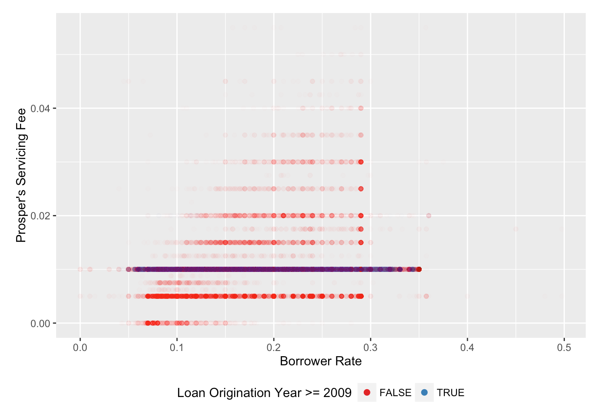
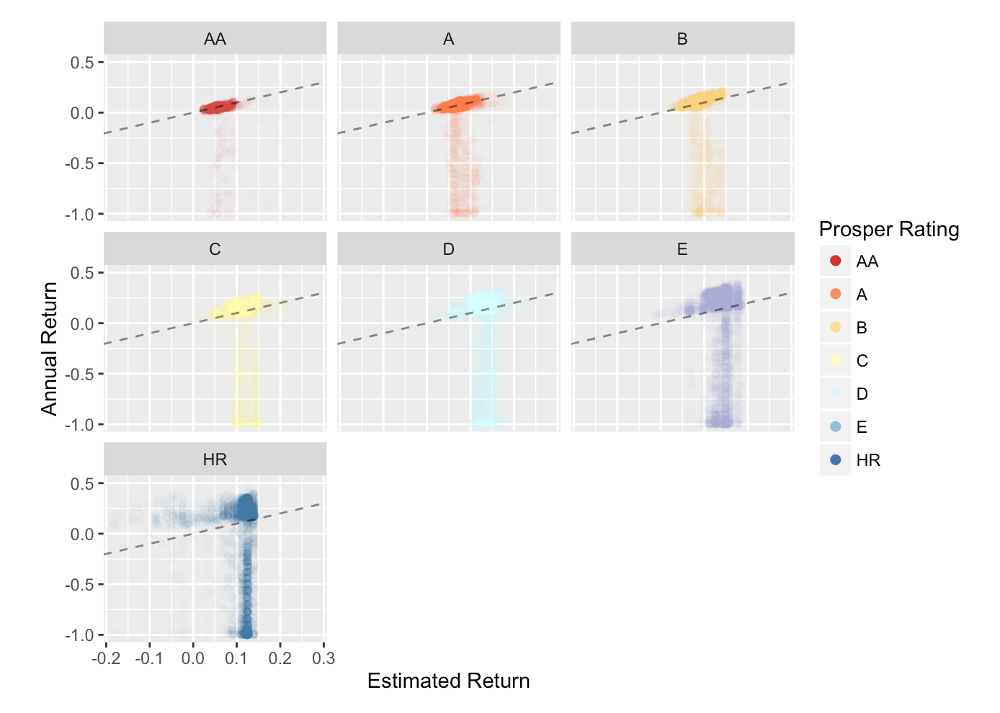
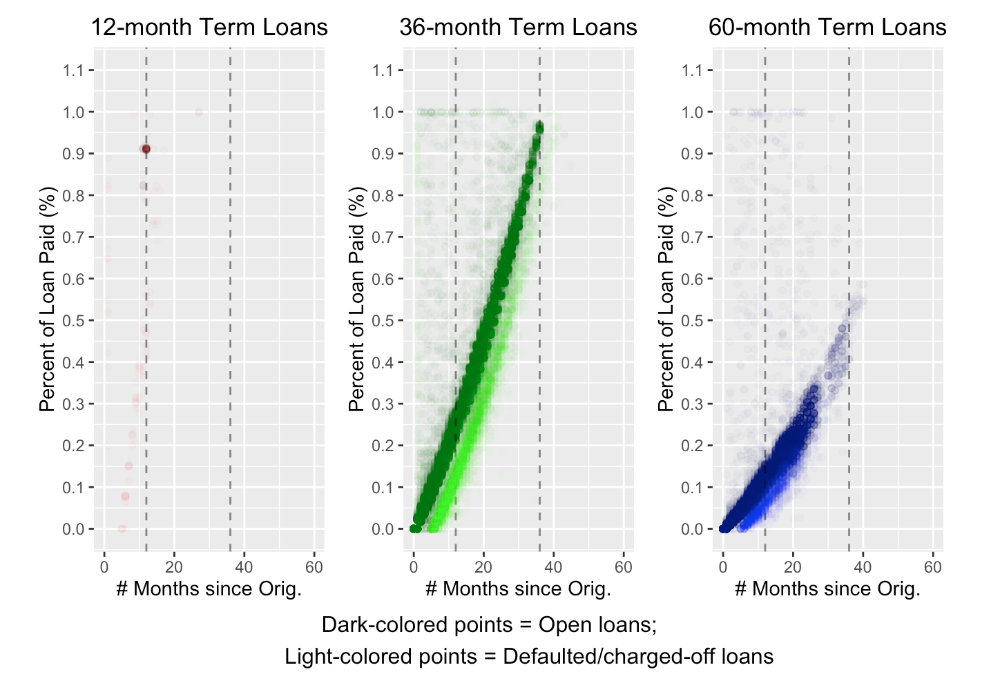

This report contains an exploratory analysis of loan data from Prosper. Prosper is
a peer-to-peer lending marketplace in which prospective borrowers post loan listings while investors select specific
listings to then invest in. Investors can select loans based on a variety of factors, such as: the loan amount, the loan
rating, the borrower’s salary, or the borrower’s number of past inquiries.
I investigated this dataset (which ranged from 2006 - 2014) using R and exploratory data analysis techniques, and discovered interesting
relationships between various variables. I also created many beautiful, informative, and revealing plots using the
awesome ggplot library.
My favorite 3 images from the report:

The above figure is the first plot in this report.
It is important because it is a clear example of how Prosper drastically changed much of its loan servicing
procedures in 2009. In my original, first-pass analysis of the Prosper loan data, I included every single loan.
However, I soon realized that there were distinct differences in loans based on whether they originated before or
after 2009. For example, the Prosper rating variables (“ProsperRating [numeric]” and “ProsperRating [Alpha]”), as
well as “EstimatedEffectiveYield”, “EstimatedLoss”, and “EstimatedReturn”, are only applicable for loans originating
in July 2009 (i.e. in Q3 2009) or later. In contrast, “CreditGrade” is only applicable for loans originating in 2008 or
earlier.
In this figure, we can see that servicing fee (a new variable that I created) was originally a variable rate prior to
2009, and then became fixed at a set rate of 5% afterwards. This figure visibly demonstrates, and therefore justifies,
that the loans in the Prosper dataset should be separated into two groups: those originating either prior to Q3 2009,
or in/after Q3 2009.

The above figure shows Annual Return vs. Estimated Return, with subplots and colors based on the Prosper rating.
This is a great plot for several reasons. First, it shows how both Annual Return (one of the variables I calculated)
and Estimated Return have a dependence on Prosper rating. Second, it shows that Annual Return and Estimated Return are
very similar when the loan rating is high, but diverge greatly as loan rating becomes worse. Third, it shows the different
ranges in a loan’s annual return, ranging from as low as -100% (i.e. the entire principal is lost, in addition to lost
interest revenue) to as high as 40% for some of the very risky loans (e.g. E and HR-rated loans). Fourth, it shows that many loans that
had negative Estimated Return values actually ended up having postive Annual Returns.
The main take-home message of this figure is that the actual annual return from a loan is not necessarily well-predicted
by Prosper’s Estimated Return, particularly for lower rated loans.

The above figure shows the percentage of each loan paid, on the y-axis, vs. the number of months since the
loan originated, on the x-axis, with sub-figures for each loan term. As stated in the bottom of the figure,
darker points depict open loans, while lighter points depict closed loans that ended up in defaulted or charged-off status.
I included this figure as the last final plot because it showed that “good” loans can be differentiated from loans that
ultimately went “bad” based on the borrower’s repayment progress. Looking at this figure, I can clearly see that with even
a simple machine learning algorithm, we can determine whether a loan will eventually be completely paid back or not. If we
plot the loan in question in the above figure, we can see whether it falls in the “good” “trend” or the “bad” “trend” (with
“trend” in quotation marks, as these points represent loans captured at a single instance in time, rather than indicating some
kind of rate or progress). From the analysis done in this report, borrower behavior (i.e. loan repayment progress) seems to
be one of the most useful indicators of a loan’s final status.